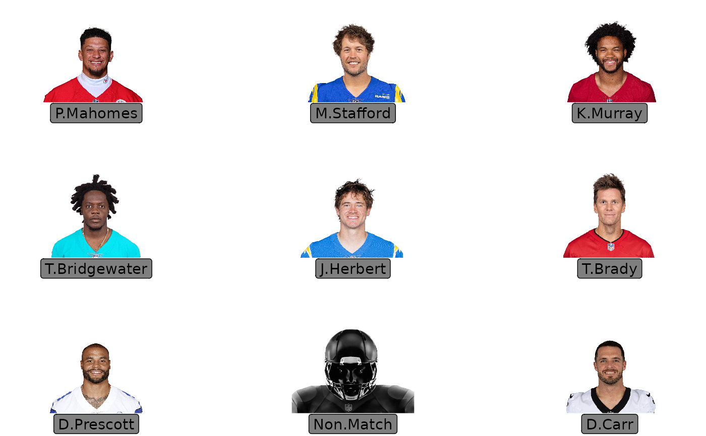
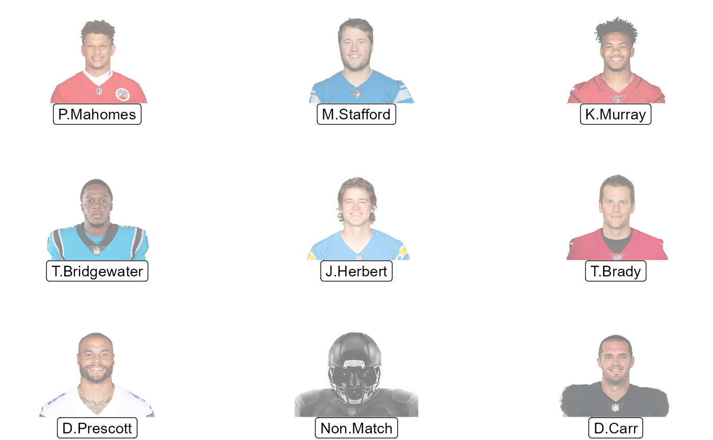
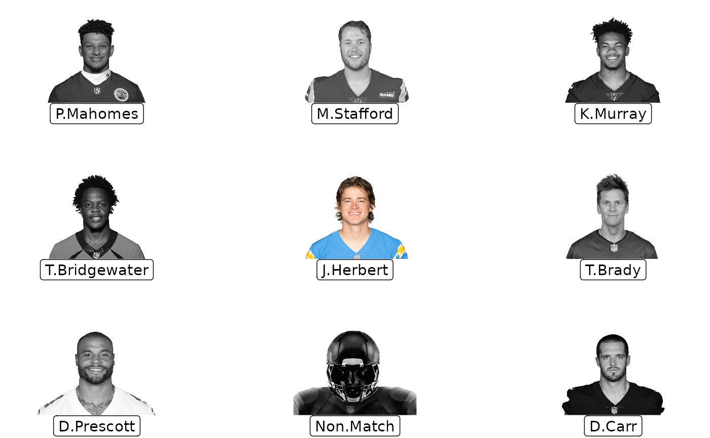

R/geom_nfl_headshots.R
geom_nfl_headshots.RdThis geom is used to plot NFL player headshots instead of points in a ggplot. It requires x, y aesthetics as well as a valid NFL player gsis id.
geom_nfl_headshots(
mapping = NULL,
data = NULL,
stat = "identity",
position = "identity",
...,
na.rm = FALSE,
show.legend = FALSE,
inherit.aes = TRUE
)Set of aesthetic mappings created by aes() or
aes_(). If specified and inherit.aes = TRUE (the
default), it is combined with the default mapping at the top level of the
plot. You must supply mapping if there is no plot mapping.
The data to be displayed in this layer. There are three options:
If NULL, the default, the data is inherited from the plot
data as specified in the call to ggplot().
A data.frame, or other object, will override the plot
data. All objects will be fortified to produce a data frame. See
fortify() for which variables will be created.
A function will be called with a single argument,
the plot data. The return value must be a data.frame, and
will be used as the layer data. A function can be created
from a formula (e.g. ~ head(.x, 10)).
The statistical transformation to use on the data for this layer, as a string.
Position adjustment, either as a string, or the result of a call to a position adjustment function.
Other arguments passed on to ggplot2::layer(). These are
often aesthetics, used to set an aesthetic to a fixed value. See the below
section "Aesthetics" for a full list of possible arguments.
If FALSE, the default, missing values are removed with
a warning. If TRUE, missing values are silently removed.
logical. Should this layer be included in the legends?
NA, the default, includes if any aesthetics are mapped.
FALSE never includes, and TRUE always includes.
It can also be a named logical vector to finely select the aesthetics to
display.
If FALSE, overrides the default aesthetics,
rather than combining with them. This is most useful for helper functions
that define both data and aesthetics and shouldn't inherit behaviour from
the default plot specification, e.g. borders().
geom_nfl_headshots() understands the following aesthetics (required aesthetics are in bold):
x - The x-coordinate.
y - The y-coordinate.
player_gsis - The players' NFL gsis id.
alpha = NULL - The alpha channel, i.e. transparency level, as a numerical value between 0 and 1.
colour = NULL - The image will be colorized with this colour. Use the special character "b/w" to set it to black and white. For more information on valid colour names in ggplot2 see https://ggplot2.tidyverse.org/articles/ggplot2-specs.html?q=colour#colour-and-fill
angle = 0 - The angle of the image as a numerical value between 0° and 360°.
hjust = 0.5 - The horizontal adjustment relative to the given x coordinate. Must be a numerical value between 0 and 1.
vjust = 0.5 - The vertical adjustment relative to the given y coordinate. Must be a numerical value between 0 and 1.
width = 1.0 - The desired width of the image in npc (Normalised Parent Coordinates).
The default value is set to 1.0 which is big but it is necessary
because all used values are computed relative to the default.
A typical size is width = 0.075 (see below examples).
height = 1.0 - The desired height of the image in npc (Normalised Parent Coordinates).
The default value is set to 1.0 which is big but it is necessary
because all used values are computed relative to the default.
A typical size is height = 0.1 (see below examples).
# \donttest{
library(nflplotR)
library(ggplot2)
# Silence an nflreadr message that is irrelevant here
old <- options(nflreadr.cache_warning = FALSE)
df <- data.frame(
a = rep(1:3, 3),
b = sort(rep(1:3, 3), decreasing = TRUE),
player_gsis = c("00-0033873",
"00-0026498",
"00-0035228",
"00-0031237",
"00-0036355",
"00-0019596",
"00-0033077",
"00-0012345",
"00-0031280"),
player_name = c("P.Mahomes",
"M.Stafford",
"K.Murray",
"T.Bridgewater",
"J.Herbert",
"T.Brady",
"D.Prescott",
"Non.Match",
"D.Carr")
)
# set a custom fill colour for one player
df$colour <- ifelse(df$a == 2 & df$b == 2, NA, "b/w")
# scatterplot of the headshots
ggplot(df, aes(x = a, y = b)) +
geom_nfl_headshots(aes(player_gsis = player_gsis), height = 0.2) +
geom_label(aes(label = player_name), nudge_y = -0.35, alpha = 0.5) +
coord_cartesian(xlim = c(0.75, 3.25), ylim = c(0.7, 3.25)) +
theme_void()

# apply alpha as constant
ggplot(df, aes(x = a, y = b)) +
geom_nfl_headshots(aes(player_gsis = player_gsis), height = 0.2, alpha = 0.5) +
geom_label(aes(label = player_name), nudge_y = -0.35, alpha = 0.5) +
coord_cartesian(xlim = c(0.75, 3.25), ylim = c(0.7, 3.25)) +
theme_void()

# apply colour as an aesthetic
ggplot(df, aes(x = a, y = b)) +
geom_nfl_headshots(aes(player_gsis = player_gsis, colour = colour), height = 0.2) +
geom_label(aes(label = player_name), nudge_y = -0.35, alpha = 0.5) +
coord_cartesian(xlim = c(0.75, 3.25), ylim = c(0.7, 3.25)) +
scale_colour_identity() +
theme_void()

# Restore old options
options(old)
# }